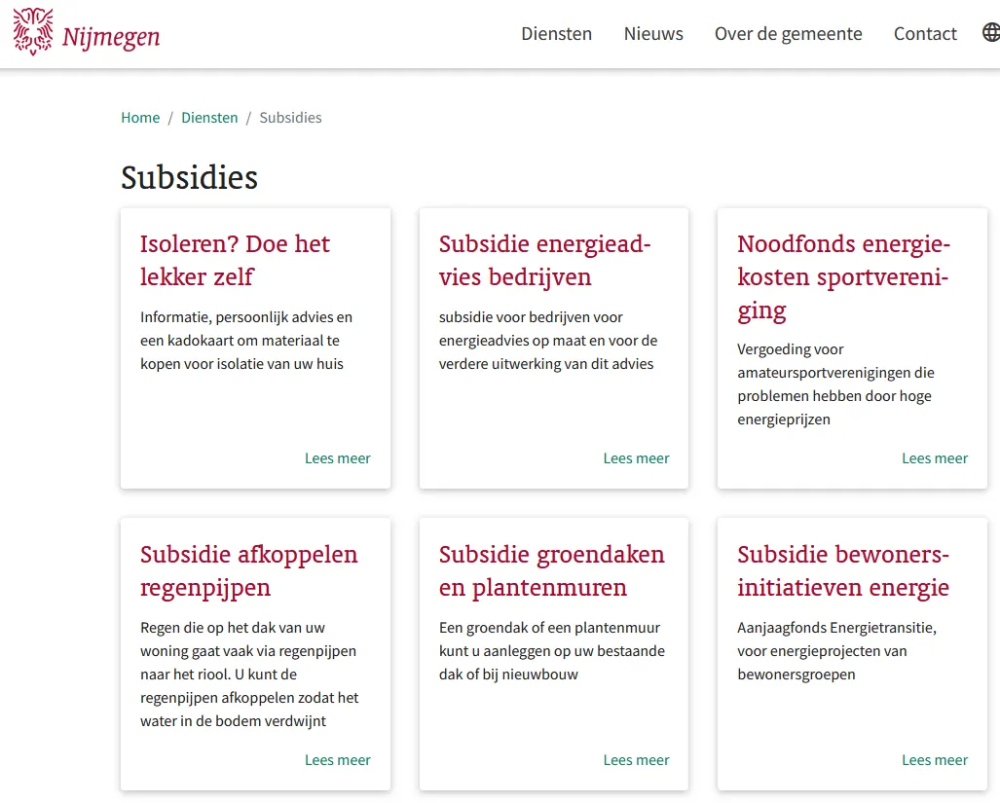

Belastingvoordelen en Subsidies voor Ondernemers in Nijmegen
Gepubliceerd op 6 september 2024
Onderdeel van de gids Ondernemen in Nijmegen

Wil je als ondernemer in Nijmegen starten of je bestaande bedrijf laten groeien? Dan zijn er verschillende belastingvoordelen en subsidiemogelijkheden die je kunnen helpen om kosten te besparen en je financiële lasten te verlichten. De Gemeente Nijmegen en de Provincie Gelderland bieden diverse subsidies aan voor innovatieve projecten, duurzame initiatieven en bedrijfsontwikkeling. Daarnaast is er de Kleineondernemersregeling (KOR), een belastingvoordeel dat speciaal bedoeld is om kleine ondernemers te ondersteunen. In dit artikel ontdek je welke opties er voor jou beschikbaar zijn en hoe je deze kunt benutten om je bedrijf een boost te geven.
Subsidies van de Gemeente Nijmegen: Ondersteuning voor Lokale Ondernemers
De Gemeente Nijmegen biedt diverse subsidiemogelijkheden om lokale ondernemers te stimuleren en de economische groei in de stad te bevorderen. Of je nu een startende ondernemer bent of een gevestigd bedrijf runt dat wil uitbreiden, er zijn verschillende subsidies die je kunnen helpen om je plannen te realiseren. Deze subsidies zijn gericht op verschillende thema’s, zoals duurzaamheid, innovatie, sociale ondernemingen en stadsvernieuwing.
1. Subsidies voor Duurzaam Ondernemen:
Als je bedrijf initiatieven ontplooit die bijdragen aan duurzaamheid, zoals energiebesparende maatregelen, circulaire bedrijfsmodellen, of duurzame productontwikkeling, kun je mogelijk gebruikmaken van subsidies die specifiek gericht zijn op milieuvriendelijke bedrijfsvoering. De Gemeente Nijmegen wil hiermee ondernemingen aanmoedigen om bij te dragen aan de transitie naar een groene economie. Dit kan bijvoorbeeld gaan om subsidies voor het plaatsen van zonnepanelen, isolatiemaatregelen, of het verduurzamen van je transportmiddelen.
2. Innovatie- en Ontwikkelingssubsidies:
Ben je bezig met innovatieve projecten of heb je een creatief idee dat bijdraagt aan de economische of technologische vooruitgang in Nijmegen? Dan kom je wellicht in aanmerking voor innovatie- en ontwikkelingssubsidies. Deze subsidies zijn bedoeld om ondernemers te ondersteunen bij het ontwikkelen en testen van nieuwe producten, diensten of technologieën die een positieve impact hebben op de stad en haar inwoners. Dit kan variëren van subsidies voor onderzoek en ontwikkeling (R&D) tot financiële ondersteuning voor pilotprojecten en proefopstellingen.
3. Subsidies voor Sociale en Culturele Ondernemingen:
De Gemeente Nijmegen ondersteunt ook sociale en culturele ondernemingen die zich inzetten voor de gemeenschap. Bedrijven die projecten starten die bijdragen aan sociale cohesie, cultuurparticipatie, inclusie of welzijn kunnen aanspraak maken op specifieke subsidies. Denk bijvoorbeeld aan projecten die werkgelegenheid creëren voor moeilijk bemiddelbare doelgroepen, of initiatieven die culturele evenementen organiseren in de stad. Deze subsidies helpen om sociale en culturele impact te vergroten en tegelijkertijd de lokale economie te versterken.
4. Stimulering van Stadsvernieuwing en Vastgoedontwikkeling:
Ondernemers die een bijdrage willen leveren aan de vernieuwing van specifieke wijken of gebieden in Nijmegen kunnen eveneens rekenen op financiële ondersteuning. De Gemeente Nijmegen biedt subsidies aan voor vastgoedontwikkeling, renovatieprojecten, of de transformatie van leegstaande panden naar nieuwe bedrijfsruimtes. Deze subsidies zijn gericht op het verbeteren van de leefbaarheid en aantrekkelijkheid van de stad en stimuleren tegelijkertijd de economische activiteit.
Hoe vraag je deze subsidies aan?
Om een subsidie van de Gemeente Nijmegen aan te vragen, dien je een aanvraag in via de officiële website van de gemeente. Zorg ervoor dat je bedrijfsplan en projectvoorstel goed zijn uitgewerkt en aansluiten bij de doelen van de subsidie. Neem ook contact op met de subsidieverstrekker om te controleren of je aan alle voorwaarden voldoet en vraag om hulp als je onzeker bent over het aanvraagproces.
Met de subsidies van de Gemeente Nijmegen kun je niet alleen de financiële last van je bedrijf verlichten, maar ook bijdragen aan een duurzamere, inclusievere en innovatieve stad.
Bekijk hier de subsidie mogelijkheden van de gemeente nijmegen
Subsidies van de Provincie Gelderland: Kansen voor Groeiende Ondernemers
De Provincie Gelderland biedt diverse subsidies voor ondernemers die bijdragen aan innovatie, duurzaamheid en regionale economische ontwikkeling. Deze subsidies zijn bedoeld om bedrijven in de provincie te ondersteunen bij het versterken van hun concurrentiepositie en het creëren van werkgelegenheid.
1. Innovatie en Duurzaamheidssubsidies:
Voor bedrijven die werken aan innovatieve technologieën of duurzame oplossingen, zoals energie-efficiëntie, circulaire economie, of slimme mobiliteit, biedt de Provincie Gelderland financiële ondersteuning. Denk aan subsidies voor onderzoek en ontwikkeling, pilotprojecten, of investeringen in duurzame bedrijfsvoering die de regio helpen verduurzamen.
2. Groeiversneller voor MKB:
MKB-bedrijven in Gelderland kunnen gebruikmaken van de ‘Groeiversneller’, een subsidieprogramma dat ondersteuning biedt bij het opschalen van je bedrijf. Dit programma biedt zowel financiële middelen voor strategische bedrijfsontwikkeling als coaching en advies om je groeiambities te realiseren. Of je nu wilt investeren in nieuwe apparatuur, je team wilt uitbreiden, of je markt wilt verbreden, de Groeiversneller kan een waardevolle impuls zijn.
Aanvragen en Voorwaarden:
Je kunt deze subsidies aanvragen via de website van de Provincie Gelderland. Zorg ervoor dat je aanvraag voldoet aan de specifieke criteria en dat je een gedetailleerd projectplan hebt dat aansluit bij de beleidsdoelen van de provincie. Dit verhoogt je kans op goedkeuring en financiële ondersteuning.
Met de steun van de Provincie Gelderland kun je je bedrijf laten groeien en tegelijkertijd bijdragen aan de innovatie en duurzaamheid van de regio.
Bekijk hier de subsidie mogelijkheden van de provincie gelderlandKleineondernemersregeling (KOR): Belastingvoordelen voor Startende Ondernemers in Nijmegen
De Kleineondernemersregeling (KOR) is een belastingregeling die speciaal is ontworpen om kleine ondernemers te ondersteunen door hun administratieve lasten te verlichten en belastingvoordelen te bieden. Dit is vooral interessant voor startende ondernemers in Nijmegen, omdat het hen helpt om de eerste financiële uitdagingen te overwinnen.
Wat is de KOR?
De KOR is een regeling die ondernemers met een jaaromzet van minder dan € 25.000 de mogelijkheid biedt om geen btw te berekenen en af te dragen. Dit betekent dat je geen btw op je verkoopfacturen hoeft te zetten en geen btw kunt terugvorderen over je zakelijke aankopen. In plaats daarvan krijg je een belastingvoordeel doordat je geen btw hoeft af te dragen aan de Belastingdienst.
Voordelen voor Startende Ondernemers:
– Verlaagde Administratieve Lasten: Door geen btw te hoeven berekenen of afdragen, vermindert de administratieve rompslomp. Dit bespaart tijd en kosten bij het bijhouden van je boekhouding.
– Kostenbesparing: Je bespaart op administratieve kosten die anders gepaard zouden gaan met btw-aangiftes en -administratie.
– Eenvoudiger Starten: Voor veel startende ondernemers kan het financieel uitdagend zijn om de eerste stappen te zetten. De KOR kan de belastingdruk verlagen, waardoor je meer ruimte hebt om je bedrijf op te bouwen zonder meteen belastingzorgen.
Belangrijke Overwegingen:
– Omzetgrens: De regeling is alleen beschikbaar voor ondernemers met een jaaromzet onder de € 25.000. Als je deze grens overschrijdt, moet je weer btw gaan berekenen en afdragen.
– Aanmelding: Je moet je aanmelden voor de KOR bij de Belastingdienst om van deze regeling gebruik te maken. Dit kan eenvoudig online worden gedaan.
De KOR biedt startende ondernemers in Nijmegen een financieel voordeel door administratieve lasten te verminderen en de belastingdruk te verlagen. Dit maakt het een aantrekkelijke optie voor kleine bedrijven die net beginnen en hun kosten willen beheersen terwijl ze hun onderneming opbouwen.
Conclusie
Het starten van een bedrijf in Nijmegen biedt tal van mogelijkheden om financieel voordeel te behalen door gebruik te maken van subsidies en belastingregelingen. De Gemeente Nijmegen en de Provincie Gelderland bieden waardevolle steun om je bedrijf te laten groeien en te verduurzamen. Bovendien kan de Kleineondernemersregeling (KOR) helpen om je administratieve lasten te verlichten en kosten te besparen door geen btw te hoeven berekenen en af te dragen.
Door deze financiële voordelen en ondersteuningsmogelijkheden optimaal te benutten, kun je de opstartkosten van je bedrijf verlagen en een stevige basis leggen voor groei. Vergeet niet om je goed te informeren over de vereisten en aanvraagprocedures voor deze regelingen om het meeste uit de beschikbare steun te halen.
Tot slot delen we een slimme tip om je lokale zichtbaarheid te vergroten: adverteer via NijmegenOnline. Dit is de meest kostenefficiënte manier om je bedrijf te promoten in Nijmegen en omgeving. Door te adverteren op ons platform kun je je bereik uitbreiden zonder hoge kosten, waardoor je meer kunt investeren in de ontwikkeling en groei van je onderneming.
Laat ons u helpen om uw bereik te vergroten: Bekijk de mogelijkheden